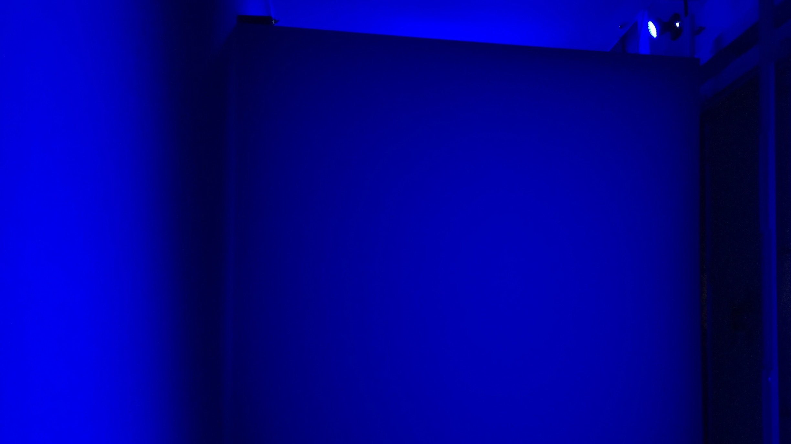
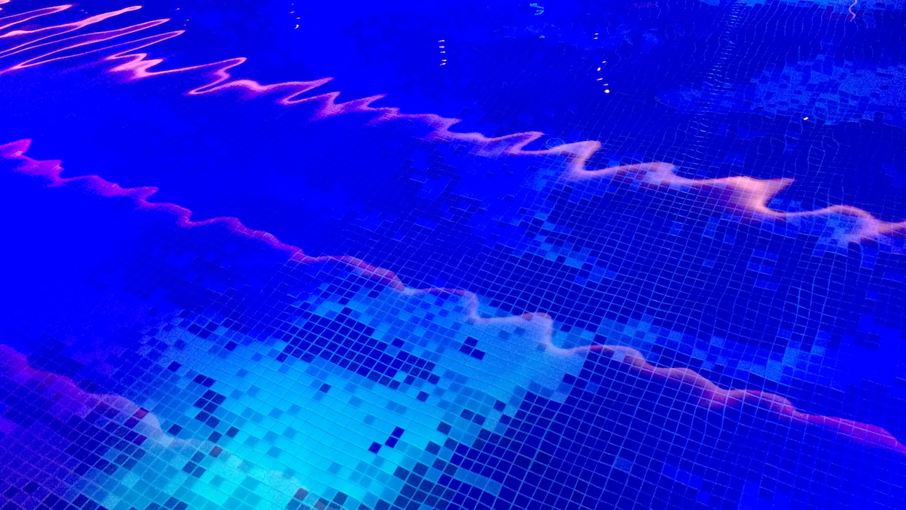

殷漪的音乐生涯开始于慢核乐队，兼任贝司手与主唱。
2000年转向数字音乐创作与笔记本现场表演。2005以音乐家的角色成为前卫表演团体“组合嬲”的创始成员。
殷漪早期的音乐创作领域包括:现场音乐表演、现代舞、肢体剧场。委约其音乐作品的表演团体包括“组合嬲”(上海)、Rubato 舞团(柏林)、广东现代舞蹈团、谢欣舞蹈剧场、二高表演。
近年来其音乐创作主要集中于基于实地录音和原声乐器的混合音乐。

